품질경영기사 (2006-03-05 기출문제)
1과목: 실험계획법
1. 다음 분산분석표를 보고 내린 결론 중 틀린 것은?
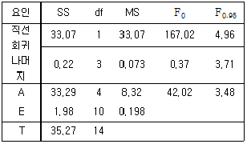
- 단순회귀로써 X와 Y간의 관계를 충분히 설명할 수 있다고 할 수 있다.
- 총 변동 중 회귀직선에 의해 설명되는 부분은 약 94% 정도이다.
- 인자 A의 효과는 유의하다.
- 고차회귀에 의해 설명될 수 있는 변동의 양은 총 변동에서 직선회귀에 의한 변동을 뺀 값이다.
(정답률: 68%)

2. 4×4 그레고라틴 방격(A,B,C,D모두 모수)에 의한 실험 계획에서 분산분석 후 AiBjCk에서의 모평균 μ(AiBjCk)의 신뢰구간을 나타내는 것은?
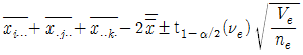
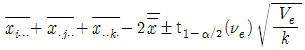
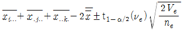
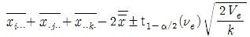
(정답률: 73%)
3. 2수준계 직교배열표를 이용한 실험계획에서 가장 올바른 것은?
- 선점도를 활용하여 요인을 배치할 수도 있다.
- 한 열은 2개의 자유도를 갖는다.
- 총 자유도의 수는 (열의 수 - 1)이다.
- 하나의 인자의 효과를 구할 때 다른 인자의 효과에 의한 치우침이 생기게 하는 것이 정밀도가 좋아진다.
(정답률: 64%)
4. 난괴법이 층별이 잘된 경우에는 반복이 있는 일원배치보다 좋은 이점은 무엇인가?
- 정보량이 많아지고 오차분산이 작아진다.
- 실험을 많이 함으로 원하는 모든 정보를 얻을 수 있다.
- 하나는 모수인자이고 다른 하나는 변량인자이므로 변량인자를 이용함으로 더 쉽게 해석할 수 있다.
- 처리수별에 따른 반복수가 동일하지 않아도 됨으로 결측치가 생겨도 쉽게 해석할 수 있다.
(정답률: 72%)
5. L27(313) 직교배열표에서 인자 A, B, C, D 와 교호작용 B×C를 배치하는 경우 오차항의 자유도는?
- 10
- 12
- 14
- 16
(정답률: 63%)
6. 교락법에서 블럭반복을 행하는 경우에 각 반복마다 블럭효과와 교락시키는 요인이 다른 경우를 무슨 교락이라 하는가?
- 완전교락
- 단독교락
- 이중교락
- 부분교락
(정답률: 77%)
7. A, B, C는 수준이 각각 3인 모수인자 이며 A, B를 1차인자로 C를 2차인자로 하여 1차단위가 이원배치인 단일 분할법 실험을 실시하였다. 이때 자유도
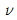
의 계산이 잘못된 것은?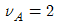
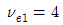
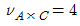
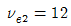
(정답률: 80%)
8. 2원배치법에서 AiBj에 결측치가 있을 경우 Yates의 결측치
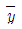
추정공식은?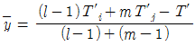
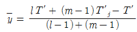
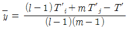
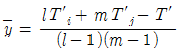
(정답률: 76%)
9. 반복이 있는 2원배치법(A인자：모수, B인자：변량)에서 분산분석 후에 행하는 다음의 추정내용 중 의미가 없다고 생각되는 것은?
- 인자 A 각 수준에 있어서 모평균의 추정
- 인자 A 두 수준간의 모평균 차에 관한 추정
- 두 인자의 수준조합 AiBj에서의 모평균 추정
- 인자 B의 산포 정도에 관한 추정
(정답률: 55%)
10. 1인자 2수준 (A1, A2)으로 각각 6회 실험하여 다음과 같은 데이터를 얻었다. 일반평균 m의 요인 효과를 95% 신뢰도로서 추정하면?
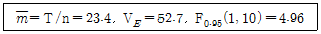
- 23.4±5.1
- 23.4±4.7
- 23.4±2.0
- 23.4±0.2
(정답률: 70%)
11. 실험계획법의 데이터 구조식에서 오차항에 대하여 몇가지 가정을 하고 있다. 이들 가정에 해당하지 않는 것은?
- 정규성
- 독립성
- 등분산성
- 치우침성
(정답률: 85%)
12. 4종류의 제품 관계에서 유도한 다음 선형식에서
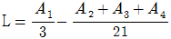
, A1=9, A2=26, A3=38, A4=41 일때 L에 대한 변동 SL은?- 10.5
- 11.0
- 15.2
- 12.6
(정답률: 59%)
13. kn 요인 배치법에 대한 설명 중 가장 올바른 것은?
- 인자의 수는 k이다.
- 인자의 수준수는 n이다.
- 실험이 반복되지 않아도 kn회의 실험횟수가 실시되어야 한다.
- 요인실험에서는 교호작용을 추정할 수 없다.
(정답률: 67%)
14. 반복이 있는 3원 배치에서 3인자가 모수이고 l=3, m=2, n=3, r=2 일 때, A×B의 E(V)값은?
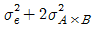
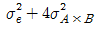
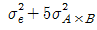
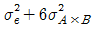
(정답률: 75%)
15. 24형 실험에서 1/2반복만 실험하기 위해 일부실시법을 이용하였다. 그 결과 다음과 같은 블록을 얻었다. 선택한 정의대비는?
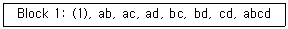
- ABC
- BCD
- AB
- ABCD
(정답률: 63%)
16. 일원배치법에서 데이터의 구조가 다음과 같이 주어질 때
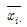
의 구조는?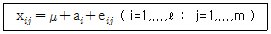
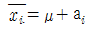
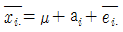
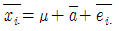
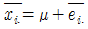
(정답률: 66%)
17. A1수준에 속해 있는 B1과 A2수준에 속해 있는 B1은 동일한 것이 아닌 실험설계법은?
- 지분실험법
- 난괴법
- 교락법
- 라틴방격법
(정답률: 80%)
18. 계수치 데이터 분석에서 각 인자의 수준수가 l= 4, m= 3이고 반복수 r=120인 반복있는 2원배치로 적합품이면 0, 불량이면 1로 처리한 결과
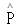
(A3B1)을 구간 추정하고 싶을 때는 유효 반복수(ne)는?(오류 신고가 접수된 문제입니다. 반드시 정답과 해설을 확인하시기 바랍니다.)- 150
- 160
- 190
- 240
(정답률: 32%)
19. 반복이 같은 일원배치법에서 다음과 같은 분산분석표를 얻었다. 이 실험에서 각 수준의 반복수는 얼마인가?
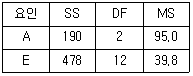
- 2
- 3
- 4
- 5
(정답률: 76%)
20. 망대 특성 실험의 경우 특성치가 다음과 같을 때 SN 비 (signal-to-noise ratio)를 구하면?
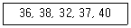
- 31.20db
- 28.15db
- -21.81db
- -31.20db
(정답률: 88%)
2과목: 통계적품질관리
21. 관리도의 계수의 식으로 가장 올바른 것은?
- D1 = d2-3d3
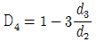
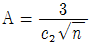
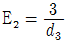
(정답률: 58%)
22. 검사 로트를 형성할 때 주의사항으로 가장 거리가 먼 내용은?
- 가능한 한 로트를 작게 할 것
- 가급적 같은 조건하에서 제조된 물품을 한 로트로 할 것.
- 경제적인 면에서 가급적 로트를 크게 하는 것이 유리하다.
- 상이한 일시 또는 교대해서 만든 제품이 함께 섞이지 않도록 한다.
(정답률: 64%)
23. 1,000개의 데이터 평균을 산출하여 3.54를 얻었다. 추가로 5.5라는 데이터가 관측되었다면 총 1,001개 데이터의 평균은?
- 3.542
- 3.540
- 3.538
- 3.544
(정답률: 68%)
24. 관리도를 구성하고 있는 관리한계선의 의의로 가장 올바른 것은?
- 공정능력을 비교 평가하기 위해
- 작업자의 숙련도를 비교 평가하기 위해
- 공정과 설비로 인한 품질변동을 비교하기 위해
- 공정이 관리상태인지 이상상태인지를 판정하기 위해
(정답률: 80%)
25. 계량치 검사를 위한 축차샘플링 검사(KS A ISO 8423)에서 연결식 양쪽규격이 2⑤±5로 규정되어 있다. σ=1.2 이고 표에서 hA=4.312, hR=5.536, g=2.315 및 nt=49를 얻었다면 nCUM＜nt일 때 상측 불합격판정치의 계산식은?
- 2.778 nCUM + 5.174
- 7.222 nCUM + 6.643
- 2.778 nCUM + 6.643
- 7.222 nCUM - 5.174
(정답률: 54%)
26. n개의 제품을 랜덤하게 취하여 각각을 k회씩 측정하여 평균하는 경우, 그 시료 평균의 분산을 나타내는 구조식으로 가장 올바른 것은? (단,
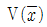
: 시료평균의 분산,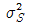
: 샘플링오차의 분산,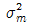
: 측정오차의 분산)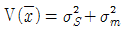
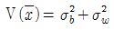
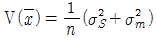
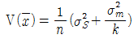
(정답률: 80%)
27. 반응온도(x)와 수율(y)의 대응관계 데이터 20개를 추출하고 시료상관계수를 구하였더니 r=0.555 이었다.
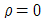
(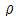
는 모상관계수)의 가설검정을 유의수준 1%로 하면 그 결과는? (단, r0.995(19)=0.549, r0.995(18)=0.561)- 상관관계가 있다고 할 수 없다.
- 상관관계가 있다고 할 수 있다.
- 재검정을 요한다.
- 대립가설
 의 채택한다.
의 채택한다.
(정답률: 50%)
28. 두 모집단에서 각각 n2=6, n1=5개를 추출하여 어떤 특정치를 측정한 결과,
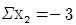
,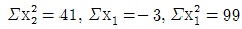
였다. 모분산비의 검정을 위하여 통계량을 구하면 어느 수치에 가까운가?- 3.08
- 3.80
- 2.08
- 2.80
(정답률: 67%)
29. μ = 23.30인 모집단에서 n = 6개를 추출하여 어떤 값을 측정한 결과는 자료와 같다. 모평균의 검정을 위하여 통계량을 구하면 어느 수치에 가까운가?
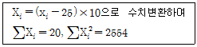
- 1.23
- 1.32
- 2.23
- 4.98
(정답률: 58%)
30. 시료 부적합품률
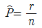
(n: 샘플의 크기, r: 샘플중에 포함되어 있는 부적합품의 수)로부터 모 부적합품률에 대해 정규분포 근사법을 이용하여 95%의 신뢰율로 양측 신뢰한계를 구할 때 사용하여야 할 올바른 공식은?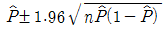
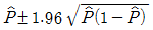
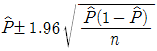
(정답률: 80%)
31. 이항분포에서 n=100, P가 1/2일 때 표준편차는 얼마인가?
- 5
- 10
- 15
(정답률: 74%)
32. 어떤 모집단에 관한 검정을 하고자한다. 다음 중 가장 관계가 먼 내용은?
- 제 1종의 과오를 줄이고자 한다면, 상대적으로 제2종의 과오가 커진다.
- 측정오차가 없다는 전제하에 α=0, β=0로 하려면 통계적으로는 모집단 전체를 조사할 수 밖에 없다.
- 제 1종의 과오를 범할 확률을 일정하게 하였을 때에는 모집단의 참값과 기준치와의 차가 적을수록, 제 2종의 과오를 범할 확률이 상대적으로 적어진다.
- 일반적으로 통계적 품질관리에서는 제 1종의 과오를 5%혹은 1%로 하는 것이 보통이다.
(정답률: 68%)
33. 다음 중 검사특성곡선에 대한 설명으로 가장 관계가 먼 내용은?
- OC 곡선에 의한 샘플링 검사를 하면 나쁜 로트를 합격시키는 위험은 없다.
- 로트의 부적합품율과 로트의 합격 확률과의 관계를 나타낸 그래프이다.
- OC 곡선의 산출에는 초기하분포, 이항분포, 포아송분포가 이용된다.
- OC 곡선의 기울기가 급해지면 생산자 위험이 증가하고 소비자 위험이 감소한다.
(정답률: 85%)
34. 다음은 두 개의 층 A, B의 층별 데이터로 작성한 관리도로부터 층의 평균치 차이 검정을 할 때 사용하는 식이다. 이 식의 전제조건으로 가장 거리가 먼 것은?
- 두 개의 관리도가 완전한 관리상태로 되어 있을 것
- KA, KB가 반드시 같을 것
 에 차이가 없을 것
에 차이가 없을 것- 본래의 분포상태가 대략적인 정규분포를 따를 것
(정답률: 83%)
35. 다음 중 np 관리도의 설명으로 가장 관계가 먼 내용은?
- 관리항목으로 부적합품의 개수를 취급하는 경우에 사용한다.
- 시료의 크기는 반드시 일정해야 한다.
- p관리도보다 계산이 쉬운 장점이 있지만, 표현이 구체적이지 못해 작업자가 이해하기 어려운 단점이 있다.
- 부적합품의 수, 1급품의 수 등 특정한 것의 개수에도 사용할 수 있다.
(정답률: 53%)
36. 확률에 대한 다음의 설명 중 가장 올바른 내용은?
- 주사위를 던지는 경우 나오는 수의 기대치는 3.5가 된다.
- 주사위를 100번 던져서 3이 15회 나왔다. 따라서 3이 나올 확률은 0.15가 된다.
- 주사위를 2번 던져서 2번 모두가 홀수가 나올 확률은 0.5이다.
- 주사위를 2번 던져서 2번 중 한번 홀수가 나올 확률은 0.25이다.
(정답률: 71%)
37. 시점 k에서 w=5개 시료군의 이동평균 를 이용한 이동평균관리도를 작성 하고자 한다. n=4인 20개의 시료군에 대하여 과 로 계산되었을 때, k≥5인 시점에서의 UCL은 얼마인가? (단, d2=2.⑤9 )
- 25.53
- 26.61
- 26.76
- 27.3
(정답률: 43%)
38. KS A ISO 2859-1 : 2001 로트별 검사에 대한 AQL 지표형 검사방식에서 소관권한자의 승인이 있을 때에 Ac= 0 과 Ac=1 인 샘플링 검사 사이에 표기되어 있는 ↑↓ 대신에 사용하는 샘플링 검사가 아닌 것은?
- 1/2
- 1/3
- 1/4
- 1/5
(정답률: 63%)
39. 동전을 200번 던져 표면이 115번, 이면이 85번 나타났다. 표면이 나올 확률이 1/2 이라는 가설을 유의수준 α = 0.⑤로 검정한 결과는? (단, )
- 표면이 나올 확률이 1/2 이라 볼 수 있다.
- 표면이 나오는 확률은 1/2 이 아니라 볼 수 있다.
- 표면이 나오는 확률은 23/40 이라 볼 수 있다.
- 표면이 나오는 확률은 23/40 이 아니라 볼 수 있다.
(정답률: 59%)
40. 전선의 인장강도가 평균 45kg/mm2 이상인 lot는 합격으로 하고 40kg/mm2 이하인 lot는 불합격으로 하려는 검사에서 합격판정치( )를 구했더니 42.466이었다. 어떤 lot에서 5개의 샘플을 취하여 평균을 구했더니 이었다면 이 lot의 판정은?
- 불합격
- 합격
- 알 수 없다.
- 다시 샘플링 해야 한다.
(정답률: 81%)
3과목: 생산시스템
41. 생산방식의 기본 유형과 관계가 없는 것은?
- 프로젝트 생산
- 개별 생산
- 라인 생산
- 스텝 생산
(정답률: 77%)
42. 작업개선을 위한 작업분석으로 가장 올바른 것은?
- 공정계열을 체계적으로 검토하여 합리화, 능률화를 기한다.
- 작업자에 의하여 수행되는 작업내용을 개선한다.
- 제품 공정의 합리화, 능률화를 꾀한다.
- 공정 수행시 장표의 합리화 능률화를 기한다.
(정답률: 61%)
43. 자주보전 활동 7스텝 중 ＂설비의 기능구조를 알고 보전기능을 몸에 익힌다.＂는 내용과 가장 가까운 스텝은?
- 1스텝 : 초기청소
- 2스텝 : 발생원· 곤란개소 대책
- 3스텝 : 청소· 급유· 점검기준 작성
- 4스텝 : 총점검
(정답률: 72%)
44. 설비의 노후화는 열화현상 중 어디에 속하는가?
- 기술적 열화
- 경제적 열화
- 절대적 열화
- 상대적 열화
(정답률: 48%)
45. JIT 시스템에서 생산준비시간의 단축에 관한 설명 중 가장 관계가 먼 내용은?
- 내적작업준비를 가급적 지양하고 가능한 외적 작업 준비로 바꾼다.
- 기능적 공구의 채택으로 작업시간을 단축시킨다.
- 조정위치를 정확하게 설정하여 조정작업시간을 단축시킨다.
- 외적 생산준비는 기계가동을 중지하여 작업준비를 하는 경우이다.
(정답률: 72%)
46. 각 제품의 매출액과 한계이익율이 표와 같다. 평균 한계이익율을 사용하여 손익분기점을 구하면 얼마인가? ( 단, 고정비는 800만원 )
- 10,996만원
- 6,400만원
- 4,123만원
- 2,743만원
(정답률: 70%)
47. 다음 설명 중 옳지 않은 것은?
- 테일러 시스템의 특징이 동시관리에 있다면, 포드시스템은 과업관리라 할 수 있다.
- 생산관리 발전의 토대를 확립한 테일러는 고임금과 저노무비의 실현을 위하여 과학적 관리법을 체계화 하려고 하였다.
- 포드에 의해 유동작업 조직을 중심으로 한 대량생산방식이 도입되었다.
- 포드 시스템의 단순화, 표준화, 규격화는 오늘날의 대량생산의 일반원칙이 되었다.
(정답률: 82%)
48. 밸런스 효율에 대한 설명 내용으로 가장 관계가 먼 것은?
- 각 작업장의 표준시간과 균형을 이루는 정도
- 생산작업에 투입되는 총시간에 대한 실제작업시간의 비율
- 사이클 타임과 작업장의 수를 얼마로 하느냐에 따라서 결정
- 사이클 타임을 길게 하면 생산속도가 빨라져 생산율이 높아진다.
(정답률: 84%)
49. 비효율적인 동작이기 때문에 개선을 검토해 보아야 할 서블릭(therblig)동작은?
- 쥐기(grasp)
- 미리놓기(preposition)
- 조립(assemble)
- 잡고있기(hold)
(정답률: 68%)
50. 구매가격 결정기준으로 틀린 것은?
- 원가계산에 의한 가격 결정
- 수요와 공급에 따른 가격 결정
- 특명 구매방식에 따른 가격 결정
- 동업 타사와의 경쟁관계에 따른 가격 결정
(정답률: 84%)
51. 스톱워치법에 의한 표준시간의 설정 시 예비 관측치의 분산이 2배가 되면 필요한 관측횟수는 몇 배로 늘어나게 되는가?
- 2
- 4
- 8
- 16
(정답률: 36%)
52. 순매출액이 8,000만원, 원재료 재고액이 1,600만원, 매출액에 대한 총 이익률이 20%인 경우 재고 회전 기간은 얼마인가?
- 2.5개월
- 3개월
- 4개월
- 6개월
(정답률: 38%)
53. 사무작업분석에 있어서 시스템챠트에 사용되는 유통공정 기호에 대한 설명으로 틀린 것은?
- ○ : 서류에 결제 사인 등 어떤 기록이 추가 됨
- □ : 서류에 기록된 내용의 조사, 검토
- ◎ : 다른 사람 혹은 부서로 이동
- ▽ : 서류의 보류, 보관 혹은 처분
(정답률: 72%)
54. 다음의 네트워크상에 있어서의 주공정은?
- ①-②-⑤-⑨-⑩
- ①-②-⑤-⑦-⑨-⑩
- ①-③-⑦-⑨-⑩
- ①-④-⑥-⑧-⑨-⑩
(정답률: 66%)
55. MRP 시스템 운영에 필요한 의 기본 요소 중 설계변경 사항, 자재변경사항, 생산가공순서 등의 제품 구성자료정보를 나타내는 것은?
- 종합생산계획(MPS)
- 자재명세서(BOM)
- 재고기록철(IRF)
- 생산계획(PP)
(정답률: 64%)
56. 체계적 워크샘플링(systematic work sampling)을 쓰기가 곤란한 경우는?
- 작업에 주기성이 없는 경우
- 작업시간의 산포가 클 경우
- 관측간격이 주기의 정수배일 경우
- 관측간격이 작업요소의 길이보다 짧을 경우
(정답률: 38%)
57. 공정별 배치의 장점을 기술한 내용으로 가장 관계가 먼 것은?
- 수요변화, 제품변경 등에 대한 유연성이 크다.
- 한 공정의 영향이 전 공정에 대해 적게 미친다.
- 다양한 작업으로 직무만족을 증가 시킬 수 있다.
- 단위당 생산시간이 짧다.
(정답률: 68%)
58. 다음은 무엇을 설명하는 것인가?
- 공정계획
- 공수계획
- 일정계획
- 진도계획
(정답률: 76%)
59. 작업우선순위 결정법으로 긴급율(Critical Ratio : CR) 법에 대한 설명으로 틀린 것은?
- CR=잔여납기일수/잔여작업일수
- CR=1.0을 기준으로 해서 작업우선순위의 높낮이가 결정된다.
- CR은 음의 값이 나올 수 없다.
- CR은 1976년 “American Production Inventory Control Society"에서 발표한 기법이다.
(정답률: 49%)
60. 철근을 생산, 판매하고 있는 K철강의 2003년 10월 판매 예측치는 150,000톤이고, 실적치는 135,000톤이었다. 지수평활법에 의하여 11월의 판매예측치를 구하면? (단, α＝0.5 이다)
- 82,500톤
- 142,500톤
- 218,250톤
- 225,000톤
(정답률: 84%)
4과목: 신뢰성관리
61. 10개의 제품을 모두 고장이 날 때 까지 시험하였다. 6번째 고장시간에 대한 중앙순위(median rank)는?
- 40%
- 45%
- 55%
- 60%
(정답률: 74%)
62. 고장률이 각각 λ1, λ2, λ3 인 부품 3개가 직렬로 연결되어 있을 때 시스템의 고장률은?
- λ1·λ2·λ3
- λ1+λ2+λ3
- 1-(λ1·λ2·λ3)
- 1-(1-λ1)(1-λ2)(1-λ3)
(정답률: 68%)
63. 시스템의 MTBF를 두 배로 늘리기 위해서는 몇 개 이상의 동일부품을 병렬로 연결해야 하는가? (단, 부품의 수명은 지수분포를 따른다.)
- 2
- 3
- 4
- 6
(정답률: 68%)
64. 그림과 같은 신뢰성 블록도를 갖는 시스템의 MTTF는 얼마인가? (단, 모든 부품의 MTBF는 104 시간이다.)
- 2×104
(정답률: 63%)
65. 아이템이 규정된 신뢰성 및 보전성을 요구조건 들을 만족시키기 위해 수행되는 운용기법 및 활동을 무엇이라고 하는가?
- 신뢰성 평가
- 신뢰성보증
- 신뢰성통제
- 신뢰성프로그램
(정답률: 35%)
66. 각종 보전시간을 분류할 때 고장수리 회복시간에 속하지 않는 것은?
- 수리시간
- 교체시간
- 대체시간
- 제 운전 서비스 시간
(정답률: 68%)
67. 표와 같은 수명 테스트 자료에서 구간 20 ~ 30에서의 고장률은 얼마인가?
- 0.33×10-1
- 0.35×10-1
- 0.37×10-1
- 0.39×10-1
(정답률: 61%)
68. 고장확률 밀도함수가 지수분포에 따르는 제품의 샘플 15개를 5개가 고장날 때까지 교체없이 시험하고 관측된 고장시간 데이터는 17.5, 18.8, 21.0, 31.0, 42.3 시간이다. 평균수명의 점 추정치는?
- 55.4 시간
- 84.6 시간
- 110.7 시간
- 130.6 시간
(정답률: 75%)
69. FMEA 용지에 반드시 들어가야 할 사항이 아닌 것은?
- 고장원인/메커니즘
- 고장모드
- 부품의 기능
- 고장률
(정답률: 50%)
70. AGREE란 무엇을 말하는가?
- 전파연구소
- 전자기기 신뢰성 자문위원회
- 미사일 신뢰성 조사위원회
- 전자관 개발부
(정답률: 72%)
71. 어떤 제품의 고장확률밀도함수는 평균고장률이 10－3/시간인 지수분포에 따르고 있다. 이 제품을 1,000시간 사용한 경우의 신뢰도는 얼마인가?
- 0.37
- 0.52
- 0.63
- 1.00
(정답률: 68%)
72. 부품을 가속온도 100℃에서 수명시험을 하고 얻은 고장시간 데이터에 의거 추정한 평균수명이 1,500시간이다. 이부품의 정상 사용온도는 50℃이고, 이 두 온도간의 가속계수 가 32일 때 정상사용 조건에서의 평균수명은 몇 시간인가?
- 3,000
- 4,800
- 48,000
- 60,000
(정답률: 65%)
73. 어떤 제품에 대하여 MTBF를 추정하기 위하여 n=50개의 제품의 수명을 정시마감 t0=100일을 정하여 놓고 관측하였더니 총 고장수는 10개이고, 총 동작시간은 4,500시간 이었다. 신뢰수준 90%로 양측 검정에 의한 MTBF의 신뢰구간을 추정하면? (단, , , , )
- (265.3, 829.5)
- (286.5, 729.3)
- (286.5, 829.5)
- (265.3, 729.3)
(정답률: 52%)
74. 다음 설명 중 틀린 것은?
- 간섭이론에서는 스트레스와 강도의 평균 및 산포에 대한 시간적 변화를 고려하여 고장 확률을 구한다.
- 고장해석이란 고장의 인과관계를 명확히 하는 것이다.
- 고장해석에는 FMEA와 FTA가 효과적이다.
- 제품을 소형화, 고밀도화 하면 중량도 적어지고 고장도 적어진다.
(정답률: 76%)
75. 지수분포를 따르는 수리계 시스템의 고장률은 0.02/시간이고, 이 시스템의 평균수리시간(MTTR)이 30시간이라면, 이 기기의 유용성(Availability)은?
- 74.2%
- 62.5%
- 48.8%
- 37.5%
(정답률: 65%)
76. 신뢰성을 향상시키는 설계의 요점에 포함되지 않는 것은?
- 사용하는 부품의 종류를 줄인다.
- 스트레스를 집중시킨다.
- 부품에 걸리는 스트레스를 경감시킨다.
- 스트레스에 대한 내성을 갖게 한다.
(정답률: 63%)
77. 신뢰성 시험에 대한 설명 내용으로 가장 올바른 것은?
- 비파괴시험인 경우가 많다.
- 대체로 시간이 오래 걸린다.
- 개발 단계에서는 시작품을 사용하므로 샘플 수는 제한 받지 않는다.
- 시험은 반드시 모든 샘플이 고장 날 때 까지 실시한다.
(정답률: 63%)
78. 그림과 같은 고장수목에서 정상사상의 발생확률은 얼마인가? (단, 모든 사상의 발생확률은 0.1이다.)
- 0.8821
- 0.0036
- 0.0987
- 0.0324
(정답률: 71%)
79. 번인 (burn-in) 시험의 목적으로 가장 올바른 것은?
- 초기고장의 감소
- 고장률의 확인
- 우발고장의 감소
- 마모고장의 감소
(정답률: 83%)
80. 제품의 고장시간은 와이블분포를 따르고 형상모수의 값이 0.5라고 한다. 제품의 평균수명이 100시간 이라면 50시간에서의 신뢰도는? (단, m=0.5 일 때 , 위치모수 r=0 이다.)
- 0.37
- 0.50
- 0.57
- 0.63
(정답률: 58%)
5과목: 품질경영
81. 고객의 요구와 기대를 규명하고 이들을 설계 및 생산 사이클을 통하여 목적과 수단의 계열에 따라 계통적으로 전개되는 포괄적인 계획화 과정은?
- VE
- QFD
- FMEA
- QA
(정답률: 64%)
82. 품질방침에서 다루어져야 하는 사항 중 틀린 것은?
- 제품의 판매대상
- 품질 리더십의 정도
- 이익 실현 정도
- 제품 전략의 중점
(정답률: 72%)
83. 표준화에 의한 이점이라고 할 수 없는 것은?
- 균일한 제품의 염가제공
- 경제적 생산의 실현
- 상거래의 단순화 및 공정화 실현
- 고객요구사항의 즉각적인 수용
(정답률: 75%)
84. 수치맺음법에 의하여 1.2501를 유효 숫자 두자리에서 처리하면?
- 1.3
- 1.25
- 1.2
- 1.250
(정답률: 57%)
85. Single PPM 세부 추진 내용 중에서 Master Plan 작성, CTQ 선정, 분위기 조성 등은 어떤 단계에서 추진하는가?
- S단계 (Scope)
- I단계 (Illumination)
- N단계 (Nonconformity Analysis)
- G단계 (Goal)
(정답률: 54%)
86. 품질시스템을 구축할 경우 고려해야 하는 TQM의 실천원칙으로 가장 관계가 먼 것은?
- 고객에 초점을 둔다.
- 결과 뿐 아니라 과정도 중시한다.
- 예방보다는 검사에 치중한다.
- 사실에 입각한 의사 결정을 한다.
(정답률: 84%)
87. 설정한 목표를 달성하기 위해서 목적과 수단의 계열을 계통적으로 전개함으로써 최적의 수단을 탐구하는 방법이다. 즉 문제의 영향을 미치는 원인은 밝혀졌지만 이 문제를 해결할 계획이나 방법은 아직 개발되지 않은 경우에 사용되는 기법은?
- 계통도
- 연관도
- 친화도
- PDPC
(정답률: 69%)
88. 품질코스트에 대한 내용으로 가장 올바른 것은?
- 품질코스트에는 직접노무비와 재료비도 포함된다.
- 품질코스트는 요구된 설계품질을 실현하기 위한 원가라 할 수 있다.
- 평가코스트와 예방코스트가 실패코스트보다 크면 QC활동의 성과가 크다고 할 수 있다.
- 고객에 대한 불만처리에 필요한 비용은 평가코스트에 속한다.
(정답률: 50%)
89. 품질은 주관적 특성과 객관적 특성으로 형성되어 있다. 다음 중 주관적 특성과 가장 거리가 먼 것은?
- 사용에 대한 적합성
- 안전성
- 소유의 우월감
- 신뢰성
(정답률: 60%)
90. 계측 목적에 의한 분류 중 관리계측에 해당하지 않는 것은?
- 환경 조건에 관한 계측
- 자재, 에너지에 관한 계측
- 생산 능률에 관한 계측
- 시험, 연구를 위한 계측
(정답률: 72%)
91. 다음 중에서 품질보증부문의 임무를 가장 올바르게 표현한 내용은?
- 고객요구를 최대로 만족시키는 품질설계
- 부적합품의 발생억제를 위한 공정관리
- 부적합품 출하방지를 위한 공정관리
- 각 부서의 품질보증활동의 종합조정통제
(정답률: 61%)
92. ISO 9000 : 2000 품질경영시스템 규격의 기초가 되는 품질경영원칙이 아닌 것은?
- 고객중심
- 리더십
- 종합조정
- 지속적인 개선
(정답률: 68%)
93. 제조부문에서 작업표준의 설정이나 유지 등의 작업관리를 할 때 유용하게 사용되는 공정능력 정보로 가장 올바른 것은?
- 검사능력
- 관리능력
- 단기공정능력
- 장기공정능력
(정답률: 48%)
94. 돗수분포표는 자료를 정리하는 방법으로써 자료들의 흩어진 모양이나 중심을 파악하는데 사용된다. 돗수분포표는 수집된 자료 개개치들을 나타낼 수 없는 단점이 있으므로 이를 보완한 자료정리 도구는 무엇인가?
- 특성요인도
- 파레토도
- 줄기-잎-그림
- 레이더 그래프
(정답률: 64%)
95. 사내표준화 규격을 규격대상에 의해 분류할 때 해당되지 않는 것은?
- 기본규격
- 방법규격
- 잠정규격
- 제품규격
(정답률: 72%)
96. 다음 문장의 ( ) 안에 들어갈 내용으로 올바른 것은?
- ① PLD ② PLP
- ① QC ② QA
- ① PL ② PLP
- ① TQC ② PLD
(정답률: 71%)
97. 두께가 3±0.002mm인 4개의 부품을 임의 조립 방법에 의해 겹쳐서 조립할 경우 조립공차는?
- 0.006
- 0.080
- 0.040
- 0.004
(정답률: 68%)
98. 품질분임조를 성공적으로 운영하기 위해서 지켜야 할 내용 중 가장 관계가 먼 것은?
- 품질분임조 활동을 시작하기 전에 종업원 교육에 투자하여야 한다.
- 종업원은 각 부서별로 자발적으로 가입하도록 유도 하여야 한다.
- 품질 분임조 활동은 일상 활동과 구별해서는 안된다.
- 품질 분임조 활동의 주제 선정은 분임조장이 연구하여 결정한다.
(정답률: 80%)
99. 한국산업규격의 부문 분류기호가 틀리게 짝지어진 것은?
- E-광산
- K-섬유
- P-의료
- W-선박
(정답률: 64%)
100. 품질감사의 중점분야 선정시 고려하여야 할 사항으로 가장 거리가 먼 것은?
- 수감(피감사)분위기
- 현재의 문제점 및 그 우선순위
- 기초 계획 수립시 고려된 사항
- 이전 감사 결과 및 해결사항
(정답률: 49%)
고차회귀에 의해 설명될 수 있는 변동의 양은 총 변동에서 직선회귀에 의한 변동을 뺀 값이라는 것은, 고차회귀 모델에서 추가적으로 설명할 수 있는 변동의 양을 의미합니다. 직선회귀 모델에서는 X와 Y간의 선형적인 관계만을 고려하므로, 고차회귀 모델에서는 이외의 비선형적인 관계도 고려할 수 있습니다. 따라서, 총 변동 중 직선회귀 모델에 의해 설명되는 부분을 제외한 나머지 부분이 고차회귀 모델에 의해 설명될 수 있는 변동의 양입니다.